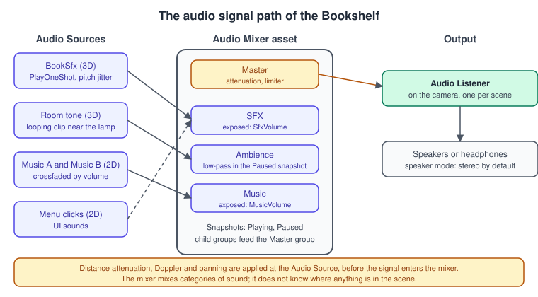
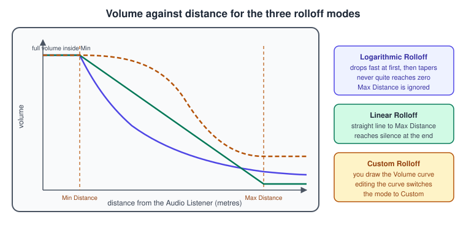
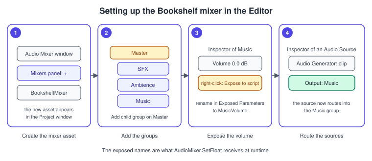

Audio
|
This content was generated with the assistance of AI and should be verified against the official documentation before being relied on in production. |
Sound is half of what makes a scene feel finished: the thud of a book landing on a shelf, the hum of a lamp, a music bed that gets muffled when the pause menu opens. Unity’s audio system is small compared with its graphics stack, but it has the same shape: assets (clips), components that put them in the scene (sources and a listener), and a routing graph (the Audio Mixer) that decides how everything is combined before it reaches the speakers. This page covers each piece, the settings that matter, and a set of complete scripts for the Bookshelf.
The facts were checked in November 2026 against the Unity 6.3 LTS manual (6000.3). Where Unity 6.5 or 6.6 changed something, the text says so. The code targets any Unity 6 project (URP 3D template, Input System) and uses the UnityEngine.Audio namespace. Audio works on every platform Unity builds for; the Web platform supports only part of the mixer and has browser autoplay rules, covered in Audio on the Web. In the running example this is the "audio with a crossfading Mixer" step that follows the Shelve-it game and the UI Toolkit HUD (UI Toolkit). The general theory of listeners, attenuation and input is in Physics, Audio and Input Basics.
The pieces and how they connect

Unity separates four things that are easy to blur together:
-
An Audio Clip is the asset: the sampled sound data plus its import settings. It has no position and no playback state.
-
An Audio Source is the component that plays something. It has a position, volume, pitch, a 2D to 3D blend and an optional Output to a mixer group. In the Unity 6.3 Inspector the field that holds the sound is called Audio Generator, and it accepts an Audio Clip or an Audio Random Container; in scripts
AudioSource.clipstill works for clips. -
An Audio Listener is the "microphone": the one place the audio is heard from. It is normally on the main camera, and the manual states that each scene should have only one.
-
An Audio Mixer is an asset with a tree of groups. Sources route into groups; groups can hold effects, attenuation and ducking; the Master group feeds the listener’s output. Without a mixer, every source goes straight to the listener and is summed at one point.
The mixer is about categories (music, effects, ambience), not about space. Distance attenuation, Doppler shift and panning are computed at the Audio Source, before the signal enters a mixer, so a mixer group cannot know how far something is from the listener.
Source: Unity Manual: Audio overview
Audio Clips and import settings
Drag a WAV, AIFF, MP3 or Ogg file into the Project window and Unity creates an Audio Clip. Tracker modules (.xm, .mod, .it, .s3m) import the same way. The Audio Clip Import Settings decide how the data is stored and loaded, which is where most memory and CPU decisions about audio are made.
| Setting | What it does |
|---|---|
Force To Mono |
Mixes a multi-channel clip down to one channel and peak-normalizes it. Use it for sounds that will be spatialized in 3D, because a 3D source is down-mixed to mono anyway; it halves the memory. |
Load In Background |
Loads the clip asynchronously so the main thread does not stall. A play request on a clip that is still loading is deferred until it has loaded. It is off by default. |
Preload Audio Data |
Loads the audio data together with the clip asset. The default depends on the platform. If it is off, the first |
Load Type |
How the clip lives in memory at runtime: Decompress On Load, Compressed In Memory or Streaming (see below). |
Compression Format |
PCM (uncompressed), ADPCM or Vorbis/MP3; the list depends on the build target. |
Quality |
The Vorbis or MP3 quality slider. Start high, lower it until the loss is audible, then raise it a little. |
Sample Rate Setting |
Preserve Sample Rate (default), Optimize Sample Rate or Override Sample Rate, for PCM and ADPCM. |
The three load types trade memory for CPU:
-
Decompress On Load decodes the whole clip when it is loaded. It is the cheapest to play, but Unity states that a Vorbis clip needs about ten times more memory decompressed than compressed (about 3.5 times for ADPCM), so it suits short effects only.
-
Compressed In Memory keeps the data compressed and decodes it while playing, on the mixer thread. Use it for clips that are too large for Decompress On Load but still play often.
-
Streaming reads and decodes the data incrementally from disk on a streaming thread, with a small buffer (about 200 KB of overhead per streaming clip). Use it for long music and dialogue.
The compression formats follow the same logic. PCM is uncompressed and the lightest on the CPU, good for short effects. ADPCM is about 3.5 times smaller than PCM with low CPU use, which Unity recommends for noisy, frequently played sounds such as footsteps and impacts. Vorbis or MP3 gives the smallest files and suits music and medium-length effects.
The ten-second threshold is a starting point, not a rule from the manual; measure with the Audio Profiler module before settling on it.
The Audio Source in detail
An Audio Source plays a clip and has a long list of settings. The ones that matter most:
| Setting | Meaning |
|---|---|
Output |
The mixer group the signal goes to. Empty means straight to the listener. |
Play On Awake / Loop |
Start when the object is created; repeat at the end. Looping sources are the usual way to build ambience. |
Priority |
0 is the most important and 256 the least; the default is 128. Use 0 for music tracks so they are not swapped out when many sounds compete. |
Volume / Pitch |
Volume is measured at a distance of one unit from the listener. Pitch 1 is normal speed; changing pitch changes both speed and tone. |
Stereo Pan |
Left to right position of a 2D sound. |
Spatial Blend |
0 is fully 2D (no distance or direction), 1 is fully 3D. The 3D settings are applied in proportion to this value. |
Reverb Zone Mix |
How much of the signal is sent to reverb zones. |
Doppler Level |
How strongly relative speed shifts the pitch. 0 disables it. |
Spread |
Spread angle of a stereo or multichannel clip in speaker space. |
Min Distance / Max Distance |
Inside Min Distance the sound is at full volume; attenuation starts outside it. Max Distance is where the linear curve reaches zero, or where a custom curve stops changing. |
Volume Rolloff |
Logarithmic, Linear or Custom, drawn below. |

Logarithmic rolloff is the most physically believable and is the right default for localized sources such as the desk lamp’s hum. Linear rolloff makes far sounds feel more present and reaches true silence, which is useful when you want a clear boundary. A custom curve lets you hold the volume constant for a while and then fall off, for example for a radio that should be audible across the whole room. The Distance functions curve editor also lets you shape Spatial Blend, Spread, Low-Pass (if a Low Pass Filter component is on the object) and Reverb Zone against distance.
The project-wide limits live in Project Settings > Audio: Global Volume, Volume Rolloff Scale, Doppler Factor, Default Speaker Mode, DSP Buffer Size (latency against CPU), Max Virtual Voices and Max Real Voices (the voice budget; every frame the loudest voices are picked), Spatializer Plugin and Virtualize Effect.
Playing sounds from code
The scripting API is on UnityEngine.AudioSource. The calls you use daily:
-
Play(),Pause(),Stop()control the source’s own clip. -
PlayOneShot(clip, volumeScale)plays a clip on top of whatever the source is already doing, so many overlapping sounds can share one source. Pitch and the other source settings still apply to all of them. -
AudioSource.PlayClipAtPoint(clip, position)creates a temporary source; convenient, but it allocates a GameObject each call and cannot be routed to a mixer group, so avoid it in hot paths. -
PlayScheduled(double time)starts a clip at an exact time on theAudioSettings.dspTimetimeline. It is independent of the frame rate, which is why Unity calls it the preferred way to stitch music clips. Schedule slightly in the future (about 100 to 200 milliseconds) so the system can prepare the playback.
Book sound effects with pitch variation
The first Bookshelf script plays a random clip with a little pitch jitter, so a hundred books landing do not sound like one sample repeated. It uses one source and PlayOneShot.
using UnityEngine;
using UnityEngine.Audio;
namespace Bookshelf.Audio
{
/// <summary>Plays book sound effects through the SFX mixer group.</summary>
[RequireComponent(typeof(AudioSource))]
public sealed class BookSfx : MonoBehaviour
{
[Header("Clips")]
[SerializeField] private AudioClip[] pickUpClips;
[SerializeField] private AudioClip[] landClips;
[Header("Mixing")]
[SerializeField] private AudioMixerGroup sfxGroup;
[SerializeField, Range(0f, 0.3f)] private float pitchJitter = 0.08f;
[SerializeField, Range(0f, 1f)] private float volumeScale = 1f;
private AudioSource _source;
private void Awake()
{
_source = GetComponent<AudioSource>();
_source.playOnAwake = false;
_source.loop = false;
_source.spatialBlend = 1f; // fully 3D: heard from the book's position
_source.rolloffMode = AudioRolloffMode.Logarithmic;
_source.minDistance = 0.5f;
_source.maxDistance = 15f;
_source.outputAudioMixerGroup = sfxGroup; // route into the mixer
}
public void PlayPickUp() => PlayRandom(pickUpClips);
public void PlayLand(float impactSpeed)
{
// Louder for harder impacts, clamped so a fast book is not painful.
float scale = Mathf.Clamp01(impactSpeed / 6f) * volumeScale;
PlayRandom(landClips, scale);
}
private void PlayRandom(AudioClip[] clips, float scale = -1f)
{
if (clips == null || clips.Length == 0)
{
return;
}
AudioClip clip = clips[Random.Range(0, clips.Length)];
// The pitch is a property of the source, so it applies to every one-shot playing now.
_source.pitch = 1f + Random.Range(-pitchJitter, pitchJitter);
_source.PlayOneShot(clip, scale < 0f ? volumeScale : scale);
}
}
}Because pitch belongs to the source, a new random pitch also changes one-shots that are still playing. For short effects that is inaudible; for long sounds use a small pool of sources and give each one its own pitch.
The Audio Mixer
An Audio Mixer asset holds a hierarchy of groups. Each group has a strip with attenuation (volume), pitch, optional effects (low-pass, reverb, compression and others), and a VU meter. A mixer always has a Master group; you add child groups for the categories of sound you want to control as a unit.
Setting up the Bookshelf mixer
-
Open the Audio Mixer window and select + at the top right of the Mixers panel to create a mixer asset. Name it
BookshelfMixer. -
In the Hierarchy (groups) panel, right-click the Master group and choose Add child group three times:
SFX,AmbienceandMusic. -
Select the Music group. In its Inspector, right-click the Volume property and choose the Expose … to script entry. Open Exposed Parameters at the top right of the Audio Mixer window and rename the parameter to
MusicVolume. Repeat for SFX to getSfxVolume. -
On each Audio Source in the scene, set Output to the matching group.
-
In the Snapshots panel, keep the starting snapshot as
Playingand add a second one namedPaused. SelectPausedand, in the Ambience and SFX groups, lower the volume and add a low-pass effect: edits are stored in the selected snapshot.

Snapshots, ducking and views
A snapshot stores the value of every parameter in the mixer: volumes, pitch, send levels, wet mix and effect parameters. At runtime you transition from one snapshot to another over a time interval, which is how you give a game "moods": a normal mix, a muffled pause mix, an underwater mix. AudioMixerSnapshot.TransitionTo(seconds) does one transition, and AudioMixer.TransitionToSnapshots(snapshots, weights, seconds) blends several with weights, for example to interpolate between rooms. Set the mixer’s updateMode to AudioMixerUpdateMode.UnscaledTime if transitions must run while Time.timeScale is zero, as in a pause menu.
Ducking lowers one group when another is active, for instance reducing the ambience while a narrator speaks, by adding a Duck Volume effect to the group to be lowered and a Send effect to the group that triggers it. Views are saved subsets of the hierarchy that reduce clutter in a large mixer. Groups can also be routed to other mixers through each mixer’s Output property.
A volume slider in decibels
Mixer attenuation is in decibels, and a slider is linear, so a naive mapping makes the middle of the slider sound far too loud. Convert a linear 0 to 1 value to decibels with a base-10 logarithm and clamp the bottom, because the Unity mixer volume range is from minus 80 dB to plus 20 dB:
\[ \mathrm{ dB } = 20 \, \log_{ 10 }( v ) \qquad v \in ( 0, 1 ] \]
using UnityEngine;
using UnityEngine.Audio;
namespace Bookshelf.Audio
{
/// <summary>Maps a 0..1 slider value to an exposed mixer volume in decibels.</summary>
public sealed class MixerVolume : MonoBehaviour
{
private const float MinDb = -80f;
[SerializeField] private AudioMixer mixer;
[SerializeField] private string exposedParameter = "MusicVolume";
[SerializeField, Range(0f, 1f)] private float initialValue = 0.8f;
private string PrefsKey => "volume." + exposedParameter;
// Do not call AudioMixer.SetFloat from Awake or OnEnable: Start is the first safe place.
private void Start()
{
SetLinear(PlayerPrefs.GetFloat(PrefsKey, initialValue));
}
public void SetLinear(float value01)
{
value01 = Mathf.Clamp01(value01);
float db = value01 > 0.0001f ? Mathf.Log10(value01) * 20f : MinDb;
mixer.SetFloat(exposedParameter, Mathf.Max(db, MinDb));
PlayerPrefs.SetFloat(PrefsKey, value01);
}
public float GetLinear()
{
return mixer.GetFloat(exposedParameter, out float db)
? Mathf.Pow(10f, db / 20f)
: initialValue;
}
}
}Two details from the reference: once you call SetFloat on a parameter, snapshots stop controlling that parameter until ClearFloat is called; and SetFloat returns false if the name is not exposed, so a typo is silent unless you check the result.
Pausing with a snapshot
using UnityEngine;
using UnityEngine.Audio;
namespace Bookshelf.Audio
{
/// <summary>Switches the mixer between the Playing and Paused snapshots.</summary>
public sealed class PauseMix : MonoBehaviour
{
[SerializeField] private AudioMixer mixer;
[SerializeField] private float transitionSeconds = 0.25f;
private AudioMixerSnapshot _playing;
private AudioMixerSnapshot _paused;
private void Awake()
{
_playing = mixer.FindSnapshot("Playing"); // names must match exactly
_paused = mixer.FindSnapshot("Paused");
mixer.updateMode = AudioMixerUpdateMode.UnscaledTime;
}
public void SetPaused(bool paused)
{
Time.timeScale = paused ? 0f : 1f;
(paused ? _paused : _playing).TransitionTo(transitionSeconds);
}
}
}A crossfading music player
Two sources play the old and new tracks while their volumes cross over. The incoming track is scheduled on the DSP clock a short time ahead so it starts on a sample boundary rather than on a frame; the fade itself uses unscaled time so it also runs in a paused game.
using System.Collections;
using UnityEngine;
using UnityEngine.Audio;
namespace Bookshelf.Audio
{
/// <summary>Crossfades between music tracks using two Audio Sources.</summary>
public sealed class MusicCrossfader : MonoBehaviour
{
[SerializeField] private AudioSource sourceA;
[SerializeField] private AudioSource sourceB;
[SerializeField] private AudioMixerGroup musicGroup;
[SerializeField, Min(0.05f)] private float defaultFade = 2f;
private AudioSource _active;
private Coroutine _fade;
private void Awake()
{
foreach (AudioSource s in new[] { sourceA, sourceB })
{
s.playOnAwake = false;
s.loop = true;
s.spatialBlend = 0f; // music is 2D
s.priority = 0; // never stolen
s.outputAudioMixerGroup = musicGroup;
}
_active = sourceA;
}
public void Play(AudioClip clip) => Play(clip, defaultFade);
public void Play(AudioClip clip, float fadeSeconds)
{
if (clip == null || (_active.isPlaying && _active.clip == clip))
{
return;
}
AudioSource incoming = _active == sourceA ? sourceB : sourceA;
AudioSource outgoing = _active;
incoming.clip = clip;
incoming.volume = 0f;
incoming.PlayScheduled(AudioSettings.dspTime + 0.15); // start on the DSP clock
_active = incoming;
if (_fade != null)
{
StopCoroutine(_fade);
}
_fade = StartCoroutine(Fade(outgoing, incoming, fadeSeconds));
}
private IEnumerator Fade(AudioSource from, AudioSource to, float seconds)
{
float startFrom = from.volume;
for (float t = 0f; t < seconds; t += Time.unscaledDeltaTime)
{
float k = Mathf.SmoothStep(0f, 1f, t / seconds);
from.volume = Mathf.Lerp(startFrom, 0f, k);
to.volume = Mathf.Lerp(0f, 1f, k);
yield return null;
}
from.volume = 0f;
from.Stop();
to.volume = 1f;
_fade = null;
}
}
}A linear fade of both volumes dips in loudness in the middle of the crossfade. The smooth step above softens that; a true equal-power crossfade uses the square root of the weights.
Audio Random Containers
Unity 6 added the Audio Random Container, an asset that holds a list of clips and plays them according to rules. It is meant for the cases where you would otherwise write the BookSfx script above: footsteps, impacts, weapons and props. Its settings include Volume and Pitch with randomization ranges, the Audio Clips list (each clip has its own volume and can be turned off), a Trigger (manual, or automatic with a pulse or offset interval), a Playback Mode (sequential, shuffle or random), Avoid Repeating Last (how many items play before one repeats) and Loop (infinite, a number of clips, or a number of cycles). You assign a container to the Audio Generator field of an Audio Source exactly like a clip, so a book could play a container of "landing on a shelf" clips with Play() and no script. The container’s pitch applies to every source that references it.
Reverb, filters and the scriptable audio pipeline
Unity cannot compute echoes from scene geometry. To fake a space, add Audio Filter components (echo, low-pass, high-pass, chorus, distortion) to a source, or place an Audio Reverb Zone where the listener should hear reverberation; sources can opt out with Bypass Reverb Zones and tune their share with Reverb Zone Mix. Mixer groups can hold the same kind of effects and apply them to a whole category.
Unity 6.3 added the scriptable audio pipeline, a Burst-compiled C# signal chain where you write your own audio processors that run at defined integration points of the audio system. In 6.5 imported audio clips became usable as generators in that pipeline (AudioClip.CreateInstance returns a GeneratorInstance). It is the route for procedural sound and custom DSP; most projects never need it.
Audio on the Web
Unity uses the FMOD library for audio on most platforms. FMOD relies on threads, which the Web platform does not provide, so on Web Unity uses an implementation built on the browser’s Web Audio API. As a result only basic features work. AudioSource supports pausing and resuming, rolloff, pitch and Doppler; AudioListener is fully supported; Microphone was not supported in 6.3 (Web support for the Microphone API arrived in 6.4); and audio mixers support creating the asset, adding groups and changing each group’s volume only, with AudioMixer.SetFloat the way to change it from script. Other mixer properties and effects are not supported. Browsers also apply autoplay policies: audio will not start until the user has clicked or tapped the page, so start music from an input handler rather than from Start(). See Web and WebGPU for the rest of the platform.
Source: Unity Manual: Audio in Web
Common mistakes
-
Playing a looping music source from
PlayOneShot. One-shots cannot be stopped or looped individually; usePlay()on a dedicated source. -
More than one Audio Listener in a scene. The manual says a scene works properly with only one. Typical after adding a second camera that carries its own listener.
-
Calling
AudioMixer.SetFloatfromAwake,OnEnableorRuntimeInitializeLoadType.AfterSceneLoad. The reference says this can behave unexpectedly; useStartor later. -
Using a linear slider value as decibels. The slider sounds almost full at one third. Convert with the logarithm.
-
Forgetting to expose the parameter.
SetFloatreturns false and nothing changes. Right-click the Volume property in the group’s Inspector and expose it, then check the name. -
Large clips as Decompress On Load. A three-minute track decompressed is hundreds of megabytes. Stream it.
-
Spatializing a stereo clip. A 3D source is down-mixed to mono; import 3D sounds as mono (Force To Mono) to save half the memory.
-
Letting snapshots and
SetFloatfight. AfterSetFloat, snapshot transitions no longer move that parameter. CallClearFloatif you want snapshots back in control. -
Time.timeScale = 0with scaled-time fades. Fade coroutines freeze; useTime.unscaledDeltaTime, and set the mixer’supdateModetoUnscaledTime.
Performance notes
-
The voice budget is real: Max Real Voices limits how many sounds are mixed per frame, and the loudest are picked. Give music Priority 0 and ambience a high number.
-
Decompress On Load is the cheapest at runtime and the costliest in memory; Compressed In Memory shifts cost to the mixer thread (the DSP CPU section of the Audio Profiler module); Streaming costs a streaming thread (the Streaming CPU section).
-
Prefer ADPCM for dense effects like footsteps. Import 3D sounds as mono. Use Load In Background for large clips to avoid main-thread stalls, and leave Preload Audio Data on for sounds that must play instantly.
-
Effects on mixer groups cost per group, not per source, which is another reason to put categories in groups rather than add filters to every source.
-
Profile with the Audio module of the Profiler (clip memory, voice counts, DSP load). The general method is in Performance and Profiling and Profiling and Optimization.
What changed recently
| When | What |
|---|---|
Unity 6.0 (October 2024) |
Audio Random Container added; the platform called WebGL is renamed Web |
Unity 6.3 LTS (December 2025) |
scriptable audio pipeline: Burst-compiled audio processors |
Unity 6.4 |
|
Unity 6.5 |
imported audio clips usable as generators in the scriptable audio pipeline |
Unity 6.6 (September 2026) |
import and use of second and third order ambisonic audio (9 and 16 channels); Unity does not decode them by default, so a third-party decoder plug-in or your own is needed |
Where the books are outdated
The audio chapter of UIA (Unity in Action, 3rd edition, chapter 11) was written for Unity 2020.3 and teaches the core model that still holds: clips, sources, listeners and the mixer. The details that moved since then are below.
| Topic | What the book shows | Current practice (Unity 6.3 LTS) |
|---|---|---|
Source setup |
a clip dropped into the Audio Source’s AudioClip field |
the field is Audio Generator and also accepts an Audio Random Container; |
Randomized effects |
randomization written in scripts |
an Audio Random Container does the same without code (the |
Mixer on Web |
mixer features assumed on every platform |
only group volume works on Web; design the mix so it degrades |
Custom DSP |
native audio plug-ins only |
the scriptable audio pipeline in C# and Burst (6.3) |
Project structure |
an audio manager object that owns the sources and volume |
route through the mixer, expose a few parameters and keep the manager small; see Project Architecture and Design Patterns |
GDP (Game Development Patterns with Unity 2021) does not cover audio.
See also
-
Physics, Audio and Input Basics: spatial audio theory, attenuation and the listener model that Unity implements.
-
Game Loop and Frame Timing: why audio scheduling uses its own clock.
-
C# Scripting and the MonoBehaviour Lifecycle: the
Awake,OnEnableandStartorder that matters forSetFloat. -
UI Toolkit: sliders and buttons that drive the mixer.
-
uGUI and TextMeshPro: the uGUI alternative.
-
Timeline and Cutscenes: audio tracks.
-
Assets, Addressables and Content: loading large clips on demand.
-
Web and WebGPU: the browser platform.
-
Profiling and Optimization: the Audio Profiler module.